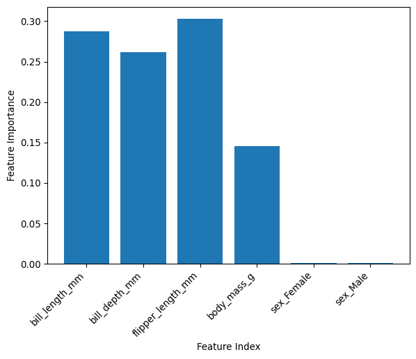

import seaborn as sns
import pandas as pd Classifying Penguin Species
To begin with we will again import pandas in order to work with our data and seaborn for our plotting and the penguin dataset.
We’ll then load the penguin dataset from seaborn into a pandas dataframe
# Load the dataset directly from the seaborn package
df = sns.load_dataset("penguins")If we then take a look at this data to check it’s loaded, we can note there are NaN values we need to remove as previously discussed and that there is a species label.
# Show the first 5 rows to verify it loaded correctly
display(df.head(5))| species | island | bill_length_mm | bill_depth_mm | flipper_length_mm | body_mass_g | sex | |
|---|---|---|---|---|---|---|---|
| 0 | Adelie | Torgersen | 39.1 | 18.7 | 181.0 | 3750.0 | Male |
| 1 | Adelie | Torgersen | 39.5 | 17.4 | 186.0 | 3800.0 | Female |
| 2 | Adelie | Torgersen | 40.3 | 18.0 | 195.0 | 3250.0 | Female |
| 3 | Adelie | Torgersen | NaN | NaN | NaN | NaN | NaN |
| 4 | Adelie | Torgersen | 36.7 | 19.3 | 193.0 | 3450.0 | Female |
Let’s remove the data with NaN values from the data.
# Create a clean dataframe by dropping rows with any missing values
df_clean = df.dropna()
df_clean.head()| species | island | bill_length_mm | bill_depth_mm | flipper_length_mm | body_mass_g | sex | |
|---|---|---|---|---|---|---|---|
| 0 | Adelie | Torgersen | 39.1 | 18.7 | 181.0 | 3750.0 | Male |
| 1 | Adelie | Torgersen | 39.5 | 17.4 | 186.0 | 3800.0 | Female |
| 2 | Adelie | Torgersen | 40.3 | 18.0 | 195.0 | 3250.0 | Female |
| 4 | Adelie | Torgersen | 36.7 | 19.3 | 193.0 | 3450.0 | Female |
| 5 | Adelie | Torgersen | 39.3 | 20.6 | 190.0 | 3650.0 | Male |
Now let’s remind ourselves how many species there were, and look at the mean values of some of the metadata for them.
species_means = df_clean.groupby("species")[
["bill_length_mm", "bill_depth_mm", "flipper_length_mm", "body_mass_g"]
].mean()
display(species_means)| bill_length_mm | bill_depth_mm | flipper_length_mm | body_mass_g | |
|---|---|---|---|---|
| species | ||||
| Adelie | 38.823973 | 18.347260 | 190.102740 | 3706.164384 |
| Chinstrap | 48.833824 | 18.420588 | 195.823529 | 3733.088235 |
| Gentoo | 47.568067 | 14.996639 | 217.235294 | 5092.436975 |
So we have 3 species.
Let’s see if we can train a model to predict the species based the metadata/input features we have in the data e.g bill length, bill depth, flipper length, body mass and sex.
We would like to predict a discrete category i.e species and our data has species labels, therefore this is supervised classification problem.
In this example we will use the Random Forest Classifier (there are other classifiers we could also try out as discussed previously.)
From Decision Trees to Random Forest
A decision tree splits data into branches based on feature values, creating a flowchart-like structure. They are intuitive — e.g is a dog black or brown — but they overfit easily: a sufficiently deep tree will memorise the training data perfectly (known as overfitting) and perform poorly on new data.
TODO: Add image of decision tree flowchart here
A Random Forest solves this by training many trees in parallel, each on a random subset of data and a random subset of features. The final prediction is the majority vote across all trees. This process is called bootstrap aggregation (bagging).
Fitting a Random Forest
Random Forest does not require feature scaling. However, you may have noticed earlier that the sex of the peguins is a categorical variable “male” and “female.” In order to use this gender information we will need one-hot encode this information such that we add 2 additonal data fields sex_Female and sex_Male, where 1 in either of these columns will indicate the penguin is that respective sex and 0 the opposite.
Let’s define our input features and our target features:
#define input features
X=df_clean[["bill_length_mm","bill_depth_mm","flipper_length_mm","body_mass_g","sex"]]
#define variable we wish to categorise
y=df_clean["species"]Now let’s one-hot encode the gender:
#one-hot encode sex category (avoiding ordinality)
X_encoded = pd.get_dummies(X, dtype=int)
X_encoded| bill_length_mm | bill_depth_mm | flipper_length_mm | body_mass_g | sex_Female | sex_Male | |
|---|---|---|---|---|---|---|
| 0 | 39.1 | 18.7 | 181.0 | 3750.0 | 0 | 1 |
| 1 | 39.5 | 17.4 | 186.0 | 3800.0 | 1 | 0 |
| 2 | 40.3 | 18.0 | 195.0 | 3250.0 | 1 | 0 |
| 4 | 36.7 | 19.3 | 193.0 | 3450.0 | 1 | 0 |
| 5 | 39.3 | 20.6 | 190.0 | 3650.0 | 0 | 1 |
| ... | ... | ... | ... | ... | ... | ... |
| 338 | 47.2 | 13.7 | 214.0 | 4925.0 | 1 | 0 |
| 340 | 46.8 | 14.3 | 215.0 | 4850.0 | 1 | 0 |
| 341 | 50.4 | 15.7 | 222.0 | 5750.0 | 0 | 1 |
| 342 | 45.2 | 14.8 | 212.0 | 5200.0 | 1 | 0 |
| 343 | 49.9 | 16.1 | 213.0 | 5400.0 | 0 | 1 |
333 rows × 6 columns
Now we want to split our data into test and train datasets as we discussed yesterday- 80% for training and 20% for testing in this example using test_size=0.2. We set random_state=1 so we have reproducible results.
from sklearn.model_selection import train_test_split
# train/test split as before (same random_state ensures identical splits)
train_X, test_X, train_y, test_y = train_test_split(X_encoded, y, test_size=0.2, random_state=1)Before we train and implement our Random Forest model, let’s take a look at how many of each class we have in the trainining data set:
#print(train_y)
print(train_y.value_counts())species
Adelie 118
Gentoo 97
Chinstrap 51
Name: count, dtype: int64species
Adelie 118
Gentoo 97
Chinstrap 51
Name: count, dtype: int64As you can see we have different numbers of penguins for each species in the training data and therefore our data is “unbalanced,” this needs to be taken into account when training the Random Forest.
For the Random Forest there a number of hyper-parameters that can be altered and tuned to improve performance, the full list can be found here https://scikit-learn.org/stable/modules/generated/sklearn.ensemble.RandomForestClassifier.html. As you can see below we’ve explicitly set some of these- some are the same as the defaults and some are different.
Increasing the number of trees used in the random forest “n_estimators” tends to improve performance but also increases the computational costs of training.
We include the class_weight=“balanced” to address the fact we have unbalanced data.
If a tree is too deep it can cause overfitting so we limit the depth using max_depth.
We don’t have time to cover tuning hyperparameters to improve peformance but one way of doing this is undertaking a GridSearchCV as explained here https://bristol-training.github.io/data-analysis-python-2/pages/500-hyperparameters.html (also covered in the extension below.)
from sklearn.ensemble import RandomForestClassifier
model= RandomForestClassifier(
n_estimators=300, # number of trees — more is generally better (diminishing returns)
max_depth=2, # maximum depth per tree — limits overfitting
min_samples_leaf=10, # each leaf must contain at least 10 peguins
max_features="sqrt", # each split considers sqrt(p) features — standard for classification
class_weight="balanced", # account for 118/97/51 class imbalance
random_state=1, # reproducible results
n_jobs=-1 # use all available CPU cores
)
model.fit(train_X, train_y)
print("Random Forest fitted.")
print(f"Number of trees: {model.n_estimators}")Random Forest fitted.
Number of trees: 300Evaluating and interpreting the Random Forest results
Evaluaton Metrics
We covered evaluation metrics yesterday and we import these from sklearn below:
from sklearn.metrics import classification_report, balanced_accuracy_scorepred_y = model.predict(test_X)
print(classification_report(
test_y, pred_y,
target_names=["Adelie","Chinstrap","Gentoo"]
)) precision recall f1-score support
Adelie 1.00 0.86 0.92 28
Chinstrap 0.81 1.00 0.89 17
Gentoo 1.00 1.00 1.00 22
accuracy 0.94 67
macro avg 0.94 0.95 0.94 67
weighted avg 0.95 0.94 0.94 67
Here, we see four classification matrices of the model: precision, recall, f1-score, and support.
-Precision: Measures the accuracy of positive predictions. It is the ratio of true positives to all predicted positives. Here, a precision of 0.81 for Chinstrap means 81% of penguins predicted as Chinstrap were actually Chinstrap.
Recall: It is the ratio of true positives to all actual positives. A recall of 0.86 for Adelie means the model identified 86% of all Adelie penguins.
F1-Score: The harmonic mean of precision and recall provides a balance between these two sometimes competing metrics. An F1-score of 1 for Gentoo indicates an perfect balance between identifying positive cases and avoiding false positives.
Support: The actual number of samples in each class within the dataset being evaluated. The support values ( 28 Adelie, 17 Chinstrap, 22 Gentoo) provide context for interpreting the other metrics and indicate the relative frequency of each class in the test data.
You can visualise the breakdown of correct and incorrect predictions for each class using a confusion matrix, in your own time see if you can use the example here to extend this to our penguin data https://bristol-training.github.io/data-analysis-python-2/extra/logistic-regression-cancer.html (see answer in extension below.)
accuracy = balanced_accuracy_score(test_y, pred_y)
print("Balance accuracy:", accuracy)Balance accuracy: 0.9523809523809524We find that the accuracy of our model when accounting for our unbalanced data using “balanced accuracy” (https://scikit-learn.org/stable/modules/model_evaluation.html#balanced-accuracy-score) - which is essentially a weighted average - results in a value of approx 95%.
Feature Importance
Random Forest has inbuilt feature importance scores. Feature importance analysis is used to understand the usefulness or value of each feature in making predictions. The goal is to identify the most influential features that have the greatest impact on the model’s output.
# get feature importances
importances = model.feature_importances_
importancesarray([0.28778635, 0.26137226, 0.30283057, 0.14590645, 0.00124131,
0.00086307])array([0.28778635, 0.26137226, 0.30283057, 0.14590645, 0.00124131,
0.00086307])import matplotlib.pyplot as plt
# plot importances
print(train_X.shape[1])
plt.bar(train_X.columns, importances)
plt.xlabel('Feature Index')
plt.ylabel('Feature Importance')
plt.xticks(rotation=45, ha='right')
plt.show()6
For features with high feature importance, it indicates that the feature is very useful in distinguishing between penguin species, and the model relies on it to make predictions.
For features with low feature importance, it suggests that the feature has a minimal impact on the model’s predictions. This feature may not contribute significantly to distinguishing the target variable (which species the penguin is.)
For more details as to why feature importance is important and useful as well as other methods to establish feature importance see https://bristol-training.github.io/data-analysis-python-2/extra/feature-importance-analysis.html
Cross Validation
Cross-validation helps us estimate how well our model will generalise to new data by the following measures:
Dividing the training data into multiple subsets (folds).
Training and testing/validating the model on different combinations of these folds.
Averaging the results to get a more reliable performance estimate.
Here we have a 5-fold cross validation (cv=5 below) and we see 5 different scores for each fold with the average accuracy of around 96%.
from sklearn.model_selection import cross_val_score
cv_scores = cross_val_score(RandomForestClassifier(
n_estimators=300, # number of trees — more is generally better (diminishing returns)
max_depth=2, # maximum depth per tree — limits overfitting
min_samples_leaf=10, # each leaf must contain at least 10 peguins
max_features="sqrt", # each split considers sqrt(p) features — standard for classification
class_weight="balanced", # account for 118/97/51 class imbalance
random_state=1, # reproducible results
n_jobs=-1
),
train_X, train_y, cv=5, scoring='accuracy')
print(f"Cross-validation scores: {cv_scores}")
print(f"Mean CV accuracy: {cv_scores.mean():.4f} ± {cv_scores.std():.4f}")Cross-validation scores: [0.92592593 1. 0.96226415 0.9245283 0.98113208]
Mean CV accuracy: 0.9588 ± 0.0299This highlights the limitations of our small dataset (300 samples for training and 33 for testing) generalising to new data given the varying results between 92% and 100% for accuracy across the 5 subsets.
Extension
Visualise Model Performance
A confusion matrix is a performance evaluation tool that provides a detailed breakdown of correct and incorrect predictions for each class, allowing you to assess the performance of your classification model. The rows represent the actual classes the outcomes should have been. While the columns represent the predictions we have made. Using this table it is easy to see which predictions are wrong.
from sklearn.metrics import confusion_matrix
plt.figure(figsize=(8, 6))
cm = confusion_matrix(test_y, pred_y)
sns.heatmap(cm, annot=True, fmt='d', cmap='Blues',
xticklabels=['Adelie', 'Chinstrap','Gentoo'],
yticklabels=['Adelie', 'Chinstrap','Gentoo'])
plt.title('Confusion Matrix')
plt.xlabel('Predicted')
plt.ylabel('Actual')
plt.show()
Hyperparameter Tuning
The key hyperparameters for Random Forest are:
n_estimators: More trees improves performance but slows training time.
max_depth: The deeper it is the more likely to overfit.
min_samples_leaf: The higher it is the smoother and more regularised the results are likely to be. Lower values can lead to overfitting.
We can use a grid search to establish the optimal hyper-parameters for the Random Forest:
from sklearn.model_selection import GridSearchCV
param_grid = {
"max_depth": [5, 8, 12],
"min_samples_leaf": [10, 20, 40],
"n_estimators": [200] # fix for speed; increase in real work
}
grid_search = GridSearchCV(
RandomForestClassifier(
class_weight="balanced", random_state=1, n_jobs=-1
),
param_grid=param_grid,
cv=5, # 5-fold cross-validation
verbose=1,
n_jobs=-1
)
grid_search.fit(train_X, train_y)
print(f"Best parameters: {grid_search.best_params_}")
print(f"Best GridSearchCV score: {grid_search.best_score_:.3f}")Fitting 5 folds for each of 9 candidates, totalling 45 fits
Best parameters: {'max_depth': 5, 'min_samples_leaf': 10, 'n_estimators': 200}
Best GridSearchCV score: 0.970